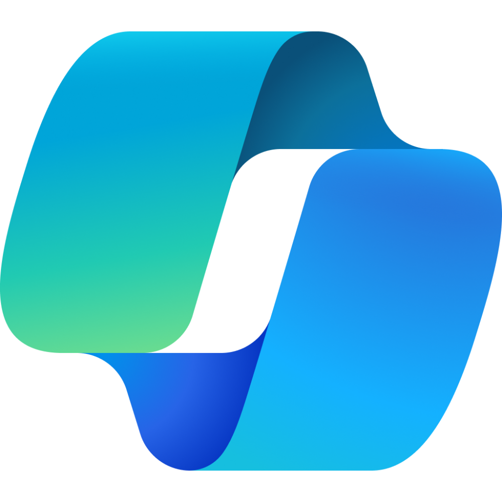
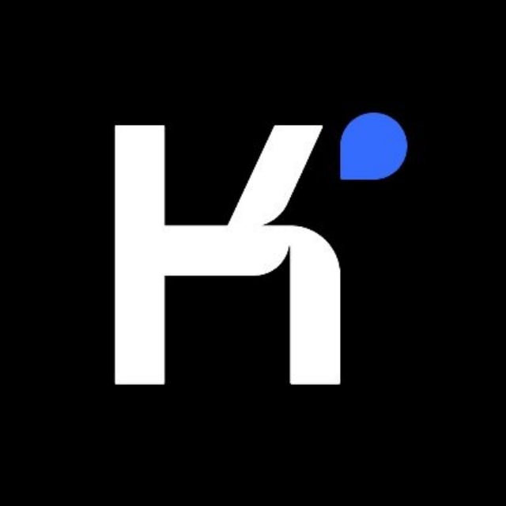
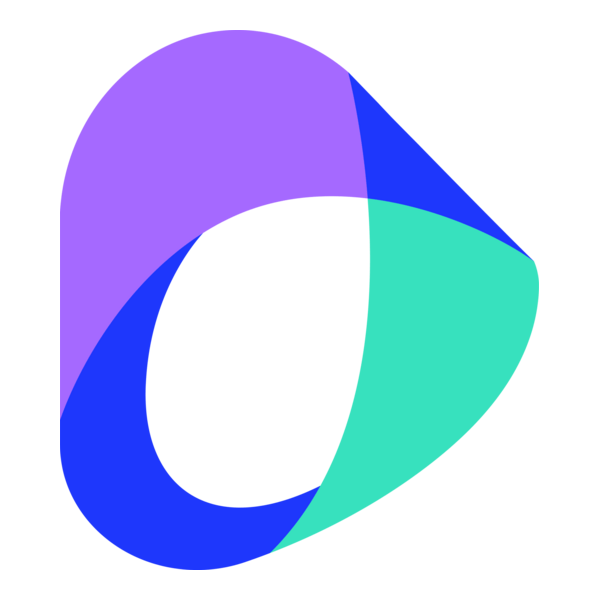

Что сегодня называют ИИ-продуктом и почему интерфейсы часто похожи.
Карта рынка

Сильны как универсальная среда для текста, поиска, агентности и подключения внешних приложений.
Нужны там, где важны русский язык, локальная доступность, договоры и корпоративный контур.



Важны как сильные модели и как конкурентный слой по цене, reasoning и доступности через платформы.
Модельный слой Китая: reasoning, код, мультимодальность, API и линейки open-weight моделей для разработчиков и платформ.
Продуктовый слой и агентные интерфейсы: длинный контекст, research, tool use, voice, media и готовые рабочие режимы внутри платформы.
Китайские ИИ нужны не только как еще один чат. Они важны как альтернативный технологический контур: усиливают конкуренцию по цене и качеству, дают разработчикам большой выбор моделей и ускоряют появление новых мультимодальных и агентных продуктов.
Сберовская платформа для диалогов, ассистентов, API и корпоративных сценариев.
Экосистема пользовательских и облачных AI-сервисов Яндекса для чата, платформы и интеграций.
Российские ИИ нужны не затем, чтобы “победить всех по benchmark”, а затем, чтобы решать реальные задачи в локальном контуре: лучше работать с русским языком, быть доступными в РФ, вписываться в договоры, инфраструктуру, комплаенс и внутренние корпоративные процессы.